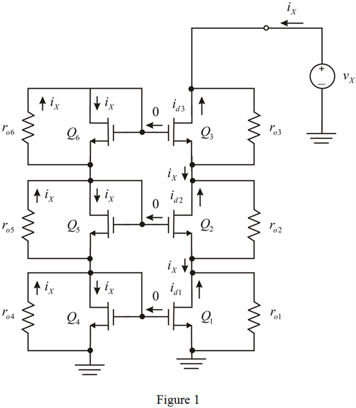

Step 1:
Refer to Figure P7.66 in the textbook for the double-cascode current mirror circuit.
If the transistors output resistance be where subscript i represent the transistor. Let us apply a voltage source  at the output node to calculate the output resistance,
at the output node to calculate the output resistance,  is shown in Figure 1.
is shown in Figure 1.

Step 2:
From Figure 1, the output resistance is,
…… (1)
Calculate the drain current of the transistor,  .
.
Simplify further.
Step 3:
Substitute 0 for and for in the expression of .
Therefore,
…… (2)
Step 4:
Similarly, calculate the drain current of the transistor,

.
Simplify further.
Therefore,
…… (3)
Step 5:
Similarly, calculate the drain current of the transistor,  .
.
…… (4)
Step 6:
Express the voltage  as the sum of voltage drop across and voltage across transistor
as the sum of voltage drop across and voltage across transistor  .
.
Substitute equations (2), (3), and (4) in the expression of .
Step 7:
Simplify further.
Therefore, the expression of the output resistance is, .